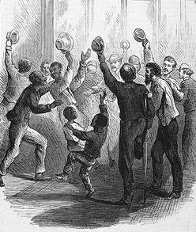

|
With the passage of the Thirteenth Amendment in 1865, slavery was abolished.
At that point, however, it was not altogether clear what freedom would mean for
the ex-slaves. White southerners quickly tried to answer that question, passing
a series of discriminatory "Black Codes" that were designed to keep the freedmen
in an subordinate position. Northerners were outraged by the South's
unwillingness to change, and by President Andrew Johnson's failure to do
anything about the situation. Congress felt compelled to act, and the result was
the Civil Rights Act of 1866. The Act was a landmark, the first time in history
that the federal government took responsibility for protecting
African-Americans' civil rights.
The Civil Rights Act of 1866 was written mostly by moderate Republican
Senator Lyman Trumbull of Illinois. The bill was not specifically addressed to
|

Harper's Weekly captured the celebrations
that occurred upon the passage of the Civil Rights Act of 1866. Ultimately,
however, the bill had a very limited effect.
|
the problems of African-Americans, but instead was meant to provide a definition
of citizenship for all Americans. It enumerated the "fundamental rights
belonging to every man as a free man," particularly the rights to inherit,
purchase, lease, hold and sell property. The bill also provided for the
prosecution of anyone who tried to interfere with these rights.
Although the Civil Rights Act of 1866 was very moderate in its terms, it
provoked a great deal of criticism. Radicals felt the bill did not go far
enough. They hoped to include provisions for land redistribution, and even
suffrage. They also did not approve of the fact that courts would be responsible
for enforcing the act, as opposed to the military. Ultimately, the Radicals came
to realize that the bill was better than nothing, and they lent their support.
The act was passed in both houses of Congress by a comfortable margin.
Conservative Democrats also opposed the Civil Rights Act of 1866. They felt
it went too far in protecting the freedmen, and gave too much power to the
federal government. Democrats in Congress could do little to stop the passage of
the bill, but President Andrew Johnson could. He promptly vetoed the Act,
labeling it "another step, or rather stride, toward centralization and the
concentration of all legislative powers in the National Government." On April 9,
Congress overrode Johnson's veto and the Civil Rights Act of 1866 became law.
This was the first time in the history of the United States that a president's
veto of a major piece of legislation was overridden.
The Civil Rights Act of 1866 ultimately had very little impact on the lives
of freedmen. Its provisions were generally ignored by white southerners, and
there was confusion about whether state or federal courts were responsible for
enforcement. The Act did have a dramatic impact on national politics, however.
It demonstrated to Congressional leaders that drastic action was needed, and
within a decade, The Civil Rights Act of 1866 would be followed by a pair of
Constitutional amendments and three more civil rights bills. In addition, the
debate over the bill served to heighten the tension between Andrew Johnson and
Congress, ultimately leading to his impeachment.
Source: Joan Waugh, ed., Facts on File Encyclopedia of American
History: Civil War and Reconstruction, 1856 to 1869 (New York: Facts on
File, 2003), 62.
|